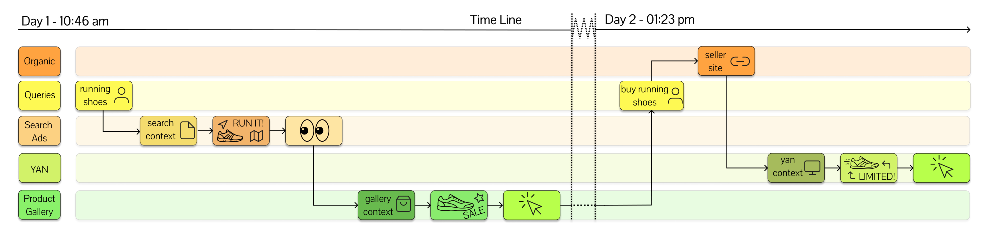
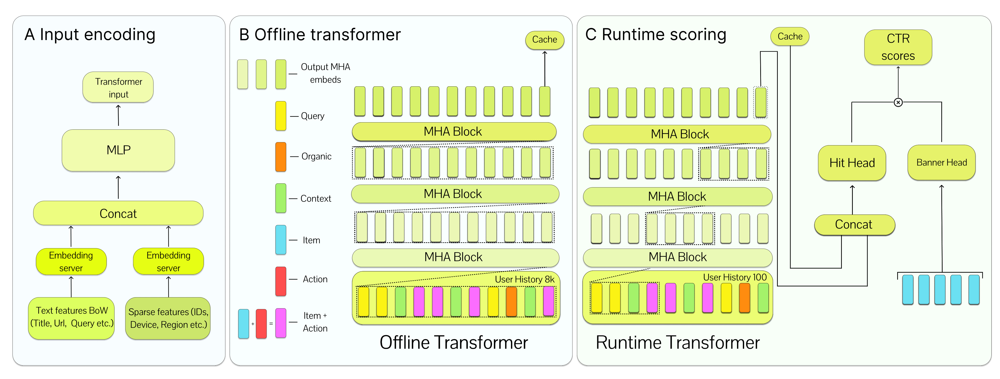
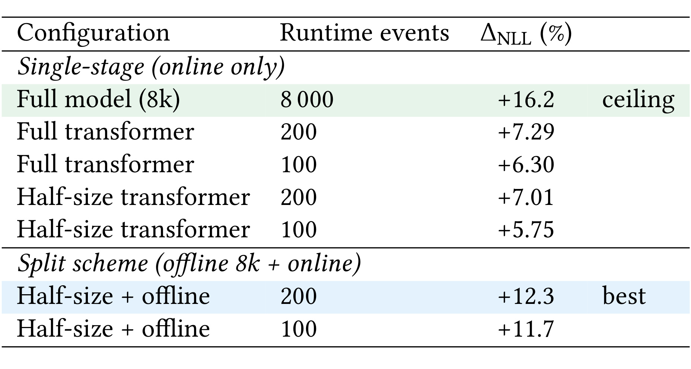
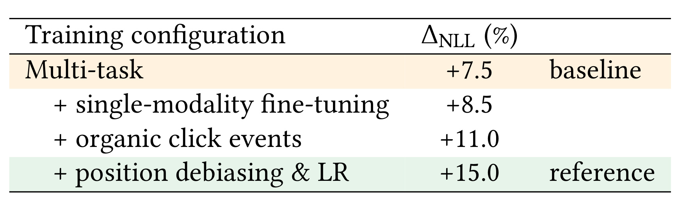
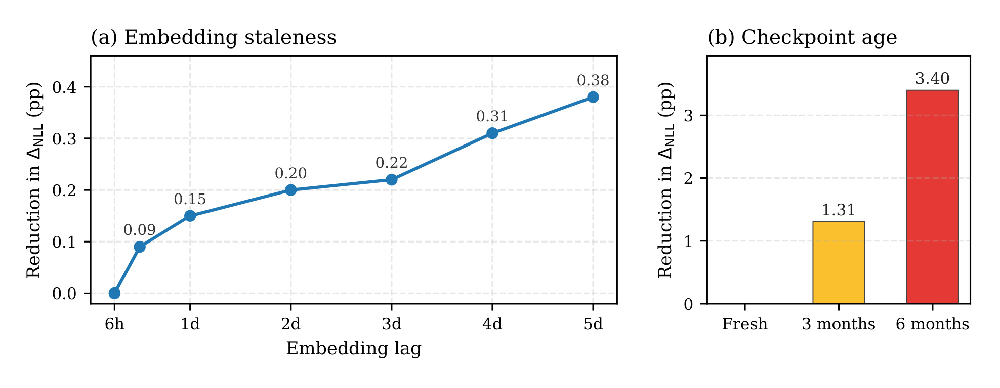
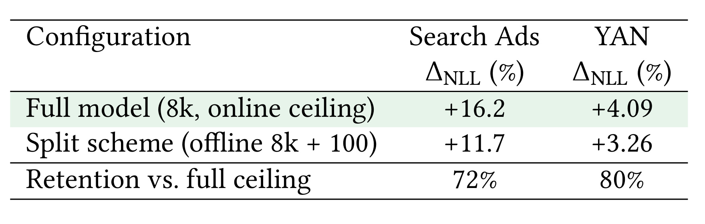
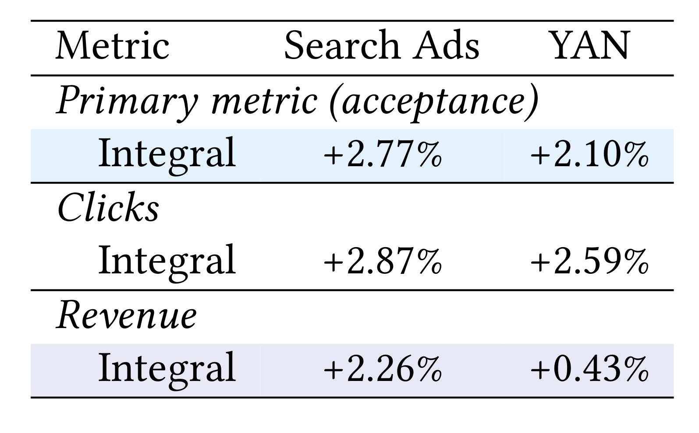

Long-History User Transformers：把 8192 条用户历史拆成离线缓存与在线短窗
论文全题为 Long-History User Transformers for Real-Time Ad Ranking。作者是 Viacheslav Ovchinnikov、Georgii Smirnov、Nikolai Savushkin、Veronika Ivanova 与 Maksim Kuzin，主要机构为 Yandex，Veronika Ivanova 同时署名 Applied AI Institute。论文于 2026 年 7 月 15 日提交，入口为 arXiv:2607.14331。截至本次核验，论文页面与正文没有给出可独立访问的公开代码或项目页；下文因此区分论文报告的生产结果与我的工程推断，不把未公开的日志、特征或基础设施当成可复现资产。
长交互历史是 CTR 预测中信息量最大的输入之一，但广告必须在数百毫秒内完成打分以进入竞价；在请求路径上运行大规模全历史序列编码器不可承受，真正的问题是怎样保住长程行为信号，同时不增加线上服务延迟。
1. 背景和问题
这篇论文面对的矛盾并不是“Transformer 能否吃更长序列”，而是“长序列收益能否进入实时广告系统”。传统 CTR 模型常把历史压成计数、类别交叉或固定兴趣向量，计算便宜，却丢掉行为的先后关系；DIN、DIEN、SIM 等序列模型恢复了一部分时间结构，但目标感知注意力或长序列检索仍需在请求时做候选相关计算。近期推荐 Transformer 已经能从几千条历史中学习显著信号，可广告排序必须与特征拉取、候选打分、竞价和预算控制共享极窄的延迟预算，直接把 8192 个事件送进大模型并不现实。论文的目标因此是把“历史覆盖长度”和“每次请求计算量”从同一个旋钮拆成两个旋钮。
任务本身是在线广告 CTR 预测。给定用户历史 \(S_u\) 和候选 banner \(b\)，模型估计点击概率：
其中 \(S_u=\{a_1,\ldots,a_T\}\) 不是单一广告位的点击串，而是把自然搜索点击、用户查询、Search Ads、Yandex Advertising Network（YAN）与 Product Gallery 合并成一条按时间排序的跨表面历史。这个定义很关键：Search Ads 受当前查询强条件化，YAN web inventory 更依赖页面上下文和长期兴趣，Product Gallery 又是搜索结果页中的商品卡片。统一序列的价值来自不同表面的互补信号，但它也带来事件模式、字段数量和频率分布不一致的问题。
论文区分三种 request awareness。NoAware 只看历史，用户表示可完全离线计算，线上只需与候选向量做内积，但会舍弃页面、设备和表面等请求上下文。ContextAware 在用户编码器里加入当前请求上下文，却不把具体候选 banner 注入序列，因此一次前向可以服务多个候选。TargetAware 则把每个候选写入序列并逐候选重跑编码器，信息最充分，成本也随候选数增长。生产方案选择 ContextAware：它保留短期请求条件，同时避免候选级 Transformer 前向。论文还用 NoAware 做隔离实验，单凭两日前的广告交互历史也获得 +2.81% \(\Delta\mathrm{NLL}\)，说明长期行为并非只在当前 query 已知时才有用。

Figure 1 把统一历史的异构性画得很具体。纵向五条泳道分别对应 organic、queries、Search Ads、YAN 与 Product Gallery；横向时间线跨越两天，同一用户可先查询 running shoes、点击搜索广告、浏览商品卡，再在第二天访问 seller site 并触发 YAN 行为。自然点击和查询各占一个 token；广告事件原本有 context、banner、action 三个字段，但部署采用 ContextAware，候选 banner 不需要以独立目标 token 进入请求时序列，因此论文把 banner embedding 与 action embedding 相加，让每个广告事件只产生 context 与 banner+action 两个 token。这个压缩使广告密集用户的广告序列长度减少三分之一，同时仍把请求侧语境、创意身份和反馈信号区分开。图中的箭头还提醒我们，跨表面历史不是多个 bag 的拼接，而是共享因果注意力顺序的单一时间线；离线编码器能看到某次 organic/query 行为如何先于之后的广告反馈，这正是聚合统计量难以表达的结构。
问题还包含一个经常被忽略的“新鲜度”维度。离线全历史向量不可能始终同步最新日志：生产管线约需一天完成日志摄取与去重，再用一天合并历史、批量推理并把向量传播到 feature store。论文训练时故意让离线编码器只看曝光时间两天以前的事件，使缓存表示的分布接近真实 serving lag；在线模块再读取最新后缀填补短期意图。这不是简单把 8192 条历史切成互斥的旧段和新段：在线后缀按固定事件数取最近行为，活跃用户主要覆盖 cutoff 之后，低活用户则可能与离线前缀重叠。重叠是允许的，目标是避免历史空洞，而不是做严格无交集分片。
因此评价这篇论文应拆成四个问题。第一，拆分架构能保留多少不可部署 full-history 模型的质量上界；第二，收益来自长历史、网络宽度还是训练配方；第三，缓存向量陈旧与模型 checkpoint 陈旧各有多严重；第四，离线 \(\Delta\mathrm{NLL}\) 能否在 Search Ads 与 YAN 的在线 A/B 中转化为排序、点击和收入，同时服务延迟不增加。论文分别用架构消融、训练消融、陈旧度实验、跨表面对照和生产实验回答，而不是只报告一个离线 AUC。
适用边界也要提前说明。所有日志、特征、CatBoost 基线、广告竞价链路和 feature store 都属于 Yandex 私有生产环境；论文没有公开可复现实验集，也没有给出绝对 NLL、请求吞吐、GPU 成本或端到端延迟数值。它最强的证据是“同一生产系统中加入长历史特征后的相对变化”，不是一个可直接迁移到公开数据集的标准基准。对其他平台而言，offline-online split 是可迁移的设计模式，72%–80% 和线上收入增幅则只能视为 Yandex 场景中的观测。
2. 方法
2.1 统一跨表面历史与 ContextAware token 化
每个动作 \(a_t\) 包含时间戳、表面或交互类型、适用时的 banner ID、文本表示以及点击/未点击标签。文本由共享 embedding service 从标题、URL、查询等 bag-of-words 特征映射为稠密向量，设备、区域等稀疏 ID 则走 embedding server 后拼接并经 MLP 投到 Transformer 输入维度。统一历史不为不同模态建立独立注意力图：因果 mask 在所有 token 上共同生效，任意位置都能关注此前来自其他表面的事件。区别只体现在 token 构造和训练头上。
广告事件的 context token 保存页面、设备与表面信息，banner+action token 则把创意身份与用户反馈相加。这个设计以 ContextAware 的 serving 约束为前提：当前候选不进入用户序列，candidate tower 单独编码 banner；历史中的 banner/action 仍然可作为过去发生过的反馈被离线或在线 Transformer 读取。若迁移到 TargetAware 排序，直接沿用这种合并未必成立，因为当前候选与动作不再是同一语义角色。换言之，token 压缩不是普适技巧，而是 awareness regime 与线上多候选复用共同决定的实现。
输入频率很不均衡：一年预训练语料约十亿事件，其中查询约占 40%，自然点击约 30%，Search Ads 与 YAN 各约 13%–14%，Product Gallery 约 3%。把这些事件放进统一 causal stream 能让高频自然行为帮助广告建模，却也可能使稀有广告表面的梯度被淹没。论文的解决办法不是重采样成完全均匀的序列，而是为广告表面提供 CTR 目标，并让每类事件都承担同模态 next-event retrieval 目标，随后再在目标广告表面做单模态微调。
2.2 双目标跨表面自回归预训练
预训练先学习一个共享的 10 层 causal Transformer，使用 ALiBi 位置偏置处理最长 8192 token 的统一历史。它同时优化广告 CTR 与下一事件检索。对带点击标签的样本，标准二元交叉熵为：
符号解释：\(N\) 是带监督的广告位置数，\(y_i\in\{0,1\}\) 是观察到的点击标签，\(\hat y_i\) 是 joint CTR head 预测的概率。预训练阶段的 CTR head 将用户侧隐藏状态与 banner 输入向量拼接后输出 logit，它还不是部署时的双塔内积头。Product Gallery、Search Ads 与 YAN 都贡献 CTR 损失；organic click 和 query 没有 CTR 标签，但不会只作为被动上下文。
为了让表示保留可用于召回的内积几何，论文对每一种模态 \(m\) 使用独立的用户投影 \(g_{\mathrm{user}}^{(m)}\) 和目标投影 \(g_{\mathrm{tgt}}^{(m)}\)，将隐藏状态与候选输入映射到同一模态的打分空间。其 sampled-softmax 损失带 log-\(Q\) 采样校正：
符号解释：\(x^+\) 是同类型的下一次正目标，\(\mathcal X_t\) 包含正样本和来自同一 device batch 的同类型 in-batch negatives，\(Q(x)\) 是用流式哈希频数估计的类型内采样分布，\(\langle\cdot,\cdot\rangle\) 是内积。广告位置预测下一次点击 banner，自然位置预测下一次 organic item 或 query。log-\(Q\) 校正避免高频目标仅因更容易成为负样本而扭曲分数。
总预训练目标写为：
符号解释：\(\mathcal M_{\mathrm{ads}}\) 包含 Product Gallery、Search Ads、YAN，\(\mathcal M_{\mathrm{all}}\) 再加入 organic clicks 与 queries。论文没有大规模调 \(\lambda\)，因为每次预训练成本高；两个目标绝对尺度不同但固定等权。真正的作用分工是：CTR 目标学习广告反馈，retrieval 目标迫使每个模态的隐藏状态保存“下一步可能发生什么”的序列信息。 这也解释为何加入 organic clicks 能在后续消融中带来显著增益。
2.3 离线全历史编码与在线短窗融合
预训练结束后，从同一 checkpoint 派生两个编码器。离线模型保留全部 10 层与 ALiBi，异步处理最多 8192 token 的用户历史，取最后位置隐藏状态为 \(z_{\mathrm{off}}\in\mathbb R^d\) 并写入 feature store。在线模型复制 checkpoint 的前 5 层；论文报告复制低层比随机初始化有更低的 CTR 微调损失。在线模型不使用显式位置编码，采用每层宽度 20 的 windowed causal attention，只编码最近事件后缀并取最后位置为 \(z_{\mathrm{rt}}\)。

Figure 2 从左到右展示完整信号流。A 区把文本 BoW 和设备、区域等稀疏特征经两个 embedding server、Concat 与 MLP 映射为序列 token，并用颜色区分 query、organic、context、item、action 及 item+action。B 区是重型 offline Transformer：它让 8k 历史通过多层 MHA block，将输出写入 cache；这一分支在专用 GPU 上异步运行，不进入每次请求的临界路径。C 区是 runtime scoring：最近约 100 个事件通过较浅的窗口 Transformer，当前请求同时读取离线 cache，二者在 Hit/User Head 汇合；Banner Head 独立产生候选向量，最终以乘积得到 CTR scores。图中出现两个 cache 位置，分别提醒用户长期表示和 candidate-side 表示都可预计算；线上真正新增的序列计算只落在短窗用户侧。架构的核心不是把大模型蒸馏成小模型，而是让大模型只在低频刷新时运行，让小模型吸收缓存后仍保持对最新请求的敏感。
微调时，两个编码器和预测头端到端联合更新，但推理采用双塔。用户塔先拼接两种表示，再经过 DCNv2 与 MLP 压到 \(d_{\mathrm{tower}}=128\)；候选塔对 banner embedding 使用同构 DCNv2+MLP。打分为：
符号解释：\(z_{\mathrm{off}}\) 是缓存的长期历史表示，\(z_{\mathrm{rt}}\) 是请求时短期表示，\(g\) 是用户侧 DCNv2+MLP，\(z_b\) 是候选塔输出，\(\sigma\) 把内积映射为点击概率。双塔形式让候选向量预计算，也能把同一用户表示复用于多个广告候选；它与预训练 joint head 不同，后者只负责学习 backbone。
完整模型约 2 亿参数。两阶段输入 embedding 维度均为 64，隐藏维度 \(d=1024\)；离线/在线层数分别是 10/5，窗口分别是 8192/20，服务时序列分别是 full history/recent events。运行时虽然最多可喂 200 个事件，但正式配置的有效感受野约 100，因为把窗口扩到 200 只把拆分方案从 +11.7% 提到 +12.3% \(\Delta\mathrm{NLL}\)，论文选择前者作为覆盖—成本折中。
2.4 感受野、复杂度与缓存刷新
窗口注意力把在线代价从 full causal attention 的 \(\mathcal O(T^2)\) 降到每层 \(\mathcal O(Tw)\)。若在线模型有 \(L_{\mathrm{rt}}\) 层、窗口宽度 \(w\)，论文正文用 \(R=L_{\mathrm{rt}}\times w\) 描述总感受野；配置 \(L_{\mathrm{rt}}=5,w=20\)，因此报告 \(R=100\)。严格按层叠滑窗的端点计数可写成 \(1+L_{\mathrm{rt}}(w-1)=96\)，两种写法都表示“约 100 个最近位置”的服务预算，不应把差异误解成实验配置冲突。离线模型仍做 8192 长度的全 causal attention，单用户成本是 \(\mathcal O(T^2)\)，但只在刷新时异步运行；总体随用户数线性增长为 \(\mathcal O(NT^2)\)，可用专用批处理 GPU 摊销。
训练数据用两日 cutoff 人为制造 \(z_{\mathrm{off}}\) 滞后，避免微调时缓存“过于新鲜”、线上却来自两天前的分布偏差。runtime suffix 取最新固定事件数，不硬切到 cutoff 之后，因此活跃用户主要补充新增事件，沉默用户也能从旧事件得到短窗表示。这个细节防止线上模块在近期无行为时输入为空。离线缓存负责容量，在线短窗负责新鲜度；两者不是相互替代，而是通过联合微调学会在 user head 中分配权重。
生产刷新采用混合策略。用户每次点击广告时触发离线重编码，优先更新最活跃、反馈最强的人群；其余长尾用户每周做一次全量批处理。论文没有选择“每个事件都刷新”，因为缓存 embedding 的质量随天数下降较慢，而频繁刷新会吃掉异步计算的成本优势。更值得投入的环节是定期重训练离线模型：后续实验显示，5 天 embedding lag 只损失 0.38 个百分点，但 6 个月旧 checkpoint 损失 3.40 个百分点。这个结论把缓存 TTL 与模型发布节奏从一个 freshness 问题拆成两个运维问题。
3. 实验结果
3.1 评价口径、数据与训练预算
论文不是让 Transformer 替换整个生产排序器，而是把其预测作为新特征注入现有 CatBoost CTR ranker；后者包含约 \(10^3\) 个手工与学习特征。这样测到的是长历史表示相对既有生产特征集的增量价值。离线指标不是 AUC，而是带点击数归一化的 log-loss 改善：
符号解释：\(\mathcal L_{\mathrm{prod}}\) 是原 CatBoost 的 log-loss，\(\mathcal L\) 是加入 Transformer 特征后的 log-loss，\(C\) 是评估集点击总数；数值为正表示改善，越高越好。广告 CTR 会进入竞价、预算与收入计算，概率校准直接影响业务，因此论文认为 log-loss 比只看排序顺序的 AUC 更贴近线上目标。需要注意，\(\Delta\mathrm{NLL}\) 是 Yandex 自定义的相对生产基线指标，不能与其他论文的 NLL 数值横向拼表。
预训练在一年、约十亿事件上跑 1 个 epoch，使用 64 张 NVIDIA A800，每卡约 5 万 token 的 packed batch，墙钟约两天。Adam 初始学习率 \(2\times10^{-4}\)，无 warmup、无 weight decay、关闭 dropout，训练期间约每五分之一 epoch 将学习率减半，共衰减三次。随后在目标广告表面端到端微调 3 个 epoch，总预算为 1+3 epochs。多数架构和训练消融在 desktop Search Ads 上完成，因为其 position-bias-cleaned 流量切片使 CatBoost 重训较快；YAN web inventory 用作主要迁移场景，生产 A/B 的 YAN 统计则按全 YAN 网络口径汇总。
3.2 架构拆分保住了多少全历史上界

Table 2 的第一行 Full model (8k) 在请求时完整运行大模型，达到 +16.2% \(\Delta\mathrm{NLL}\)，但论文明确把它定义为不可部署 ceiling。纯在线模型只看 100–200 个事件：full transformer 在 200/100 事件下为 +7.29/+6.30，half-size transformer 为 +7.01/+5.75。把在线半尺寸模型与离线 8k 缓存结合后，200 事件得到 +12.3，100 事件得到 +11.7。前者相对 +16.2 上界恢复约 76%，后者恢复约 72%；正式生产选择 100 事件，因为减少一半 runtime coverage 只损失 0.6 个百分点。对照还揭示两个机制：200 事件下减半模型宽度只从 +7.29 降到 +7.01，序列覆盖比宽度更重要；而给 half-size/200 加离线缓存从 +7.01 升到 +12.3，额外 +5.3 个百分点无法由短窗重建，说明缓存确实携带互补的长程信号。这个表支撑的是“拆分恢复了多数 full-history 增量”，不是“拆分与 full-history 等价”。
另一个容易误读的点是 full 8k ceiling 本身没有进入线上延迟测量，因为它从一开始就被判定不可部署。所谓“不增加 serving latency”只适用于 split 方案相对现有生产流水线，而不是声称 8192-token Transformer 零成本。在线模块与已有特征计算并行执行，其前向成本被现有 latency budget 吸收；如果换成串行服务图、候选量或硬件不同，结果可能变化。
3.3 训练配方与数据组成

Table 3 表明网络拆分只是起点。跨 Product Gallery、Search Ads、YAN 的 multi-task 模型为 +7.5；在 Search Ads 上做 single-modality fine-tuning 后到 +8.5，增加 1.0 个百分点，作者将其解释为减少跨表面梯度干扰。把 organic click events 加入历史后到 +11.0，再增 2.5 个百分点：自然搜索点击既数量大又能表达商业意图，说明跨表面输入不是装饰。最后加入 position debiasing 与更高学习率达到 +15.0，单步增 4.0 个百分点，是表中最大变化。位置去偏的做法是历史事件训练和推理都提供真实展示位，但当前候选在训练用真实位置、推理固定为位置 1，迫使模型预测“若展示在顶部”的内在相关性，降低位置对点击概率的混杂。由于最后一行同时改变位置处理与学习率，不能仅凭该表把全部 +4.0 归因于其中一个因素；这是该消融的因果识别限制。
这组结果也提醒复现者，复制 10/5 层和 8192/100 感受野并不足以复制收益。预训练语料的跨表面组成、organic click 覆盖、位置标签定义、生产 baseline 的特征强度和目标表面微调都可能同等重要。论文没有公开独立拆开的 position debiasing-only、learning-rate-only 结果，也没有报告不同 \(\lambda\) 或负采样策略的敏感性，训练配方仍有未分解部分。
3.4 缓存陈旧与模型陈旧

Figure 3 左图把最新配置作为零点：embedding lag 从 6 小时增加到 1、2、3、4、5 天，\(\Delta\mathrm{NLL}\) 的减少依次约为 0.09、0.15、0.20、0.22、0.31、0.38 个百分点，曲线平滑而没有骤降。右图考察模型参数年龄：3 个月旧 checkpoint 损失 1.31，6 个月损失 3.40 个百分点，量级显著大于缓存向量的数日滞后。它支持生产上“点击触发+每周批量”的 embedding 刷新，而不是每个事件都重算；同时要求 checkpoint 保持稳定重训练节奏。这里比较的是离线 Search Ads 切片上的相对收益损失，不是用户兴趣变化的直接统计，也没有覆盖节假日、重大事件或新广告品类突变。我的判断是，慢速平均退化可能来自长期偏好在 cached vector 中占主导，但论文没有按用户活跃度或兴趣漂移强度分层，因此不能把 5 天安全窗机械迁移到其他平台。
论文还报告纯历史 NoAware 方案在两日 cutoff、没有 runtime context 的条件下仍为 +2.81% \(\Delta\mathrm{NLL}\)。这说明缓存不是只有在线短窗存在时才有效，却没有证明可删掉 runtime 模块：Search Ads 强依赖 query，NoAware 会留下大量上下文相关信号。更合理的解读是 \(z_{\mathrm{off}}\) 具备独立预测力，\(z_{\mathrm{rt}}\) 再补充 query、设备、页面和最近行为。
3.5 跨表面与历史长度

Table 4 将固定 \(R=100\) 的 split scheme 搬到 YAN web inventory。Desktop Search Ads 的 full 8k/split 分别为 +16.2/+11.7，恢复 72%；YAN 是 +4.09/+3.26，恢复 80%。YAN 的绝对增量较小，但相对 ceiling 的保留比例略高。论文认为这说明 offline representation 捕获的是可跨广告表面的用户模式，而不是只适配 Search Ads。仍需谨慎：Search Ads 有显式 query，基线 CTR 更高；YAN 是上下文页面广告，且主消融与 YAN 测试使用不同数据切片，绝对 \(\Delta\mathrm{NLL}\) 不可直接判断哪个业务“更容易”。可转移的是拆分比例在两个表面都保住多数上界，不是一个统一绝对增益。
历史长度分层提供了另一条相关性证据。注册用户的 PUID 能跨会话和设备聚合，平均历史约 1200 个事件，\(\Delta\mathrm{NLL}\) 为 +18.22；匿名设备级 UniqID 平均约 550 个事件，结果为 +13.32。长历史组收益更大，符合论文“更多历史包含更多可预测信号”的中心假设。但这不是随机控制实验：PUID 与 UniqID 同时在注册状态、跨设备可见性、活跃度和用户组成上不同，不能把 4.90 个百分点差距全部归因于事件数。更强的验证需要在同一用户类型内按截断长度做 controlled ablation，论文尚未报告。
3.6 生产 A/B 与不增加延迟的含义

Table 6 给出生产实验的最终证据，所有增益均报告为 \(p<0.05\)。Search Ads 的 primary acceptance metric、clicks、revenue 分别提升 +2.77%、+2.87%、+2.26%；YAN 分别为 +2.10%、+2.59%、+0.43%。Search Ads 的点击和收入增幅接近，YAN 则点击明显快于收入。论文说明 primary metric 是广告主侧、跟踪点击后转化的验收指标，它在 YAN 同步提高 +2.10%，因此作者把点击—收入差解释为更多高广告主价值点击，而不是简单稀释质量。这里仍缺少 primary metric 的公开公式、置信区间、流量规模和实验时长，外部读者只能确认方向、相对幅度和显著性声明，无法独立复算统计功效。YAN 还有口径差异：模型部署在 web inventory，但竞价效应会传播到相邻库存，所以表中指标按完整 YAN network 汇总；它不是 web slice 的局部 uplift。
论文报告所有辅助指标均未回退，最重要的是 serving latency 没有增加。原因有两层：重型离线模型在专用 GPU 上异步执行，不进入请求关键路径；轻量 runtime Transformer 与现有 CTR 特征组件并行，而不是串在后面，所以其计算被既有延迟预算吸收。这个结果证明 Yandex 当前服务图可以容纳该模块，但没有给出 P50/P95/P99、QPS、缓存命中率或新增 GPU 总成本。“无延迟增加”应读作 A/B 监控范围内未观察到 serving latency 回退，不能扩写成系统总成本不增加。离线批处理、feature store 存储、点击触发刷新和模型重训练显然都有资源开销，只是被移出每请求临界路径。
综合离线与在线证据，论文的证据链相对完整：Table 2 说明缓存贡献不等于扩大短窗；Table 3 说明训练数据与偏差处理是收益的一阶来源；Figure 3 说明缓存策略有运维余量；Table 4 在第二广告表面复现相对恢复率；Table 6 再证明排序与业务指标上线后为正。薄弱处也清晰：私有数据不可复现，消融集中在桌面 Search Ads，位置去偏与学习率没有拆开，PUID 分层存在混杂，成本只报告“延迟未增加”而没有绝对服务指标。
4. 总结
4.1 我的判断
这篇论文最有价值的部分是把长历史推荐模型的部署问题重写为计算频率分配：8192-token、10 层、全注意力的重型编码只在离线刷新时运行，把结果压成固定向量；每个请求只用 5 层、窗口 20、约 100 个最近事件的在线模块，再用 DCNv2+MLP 与 candidate tower 做内积。这个设计没有消除长历史计算，而是把 \(\mathcal O(T^2)\) 从高频请求移到低频异步任务，把线上成本约束成 \(\mathcal O(Tw)\)。它与蒸馏、截断或只做缓存不同，因为长期表示和短期表示都保留，并在目标 CTR 上联合微调。
证据最强的数字有三组。第一，split 100 在 Search Ads/YAN 分别保留 full-history ceiling 的 72%/80%，说明质量损失有限但并非没有。第二，embedding lag 五天只损失 0.38 个百分点，而六个月 checkpoint 损失 3.40，给出“缓存不必过度刷新、模型必须持续重训练”的明确优先级。第三，生产 A/B 中 Search Ads 主指标/收入 +2.77%/+2.26%，YAN +2.10%/+0.43%，且作者报告服务延迟未增加。三组数字分别回答质量、运维和业务结果，组合起来比单一离线榜单更有说服力。
对推荐系统工程的直接启发是：当全历史模型的收益真实但请求路径不可承受时，可以把用户表示拆成“低频高容量 cache + 高频低容量 delta”。用户侧缓存必须通过训练模拟真实 lag，在线后缀要允许与缓存前缀重叠以覆盖低活用户，candidate tower 要可预计算，多模块最好并行接入而非串行。刷新策略也可按强反馈事件触发，再用低频批处理覆盖长尾。不过这些是设计原则，不是拿来即用的参数；8192、100、两日 cutoff、点击触发和每周全量都与 Yandex 日志、硬件和业务节奏绑定。
4.2 局限与不可外推
第一，数据、生产 baseline、特征与 primary metric 均不公开，没有代码或公开项目页，外部无法复现 +2.77% 或核验“无延迟增加”的绝对口径。第二，full-history ceiling 本身不可部署，72%–80% 是对内部 \(\Delta\mathrm{NLL}\) 上界的相对保留，不代表线上收益也按同一比例恢复。第三，YAN 离线实验在 web inventory，在线指标却按全网络汇总；竞价传播使这个口径合理，但也减少了局部因果解释的透明度。第四，PUID 历史更长同时代表注册、跨设备和活跃度差异，历史长度不是唯一变量。第五，训练配方最后一步同时改 position debiasing 与 learning rate，缺少单因素消融。
还有两类系统风险。缓存向量虽然对数日 lag 稳健，但论文没有覆盖极端兴趣漂移、新用户、身份合并错误、特征 store miss、跨地区合规或删除请求；离线表示把长周期行为压进固定向量，也会放大身份绑定与隐私治理要求。成本方面，在线 latency 不变不等于总成本不变：一年十亿事件预训练使用 64 张 A800 约两天，离线刷新面向数亿用户，feature store 还要保存缓存。缺少吞吐、缓存大小、刷新失败率、GPU 利用率与单位收益成本后，无法判断该方案在较小平台是否经济。
后续最值得跟进三件事：一是代码或更完整系统报告是否公开，尤其是用户塔融合、cache schema、runtime 并行调度和绝对 latency；二是在公开广告或推荐数据上建立同用户、同模型的 controlled history-length truncation，排除 PUID/UniqID 混杂；三是把 checkpoint age、embedding age 与用户活跃度做交叉分层，验证点击触发+每周全量是否对长尾和兴趣突变都稳健。若这些信息仍不可得，最可复用的结论应保持克制：离线全历史缓存与在线短窗融合是一条经过大规模生产验证的架构模式，但具体收益、刷新周期和成本边界仍需在目标系统内重新测量。